|
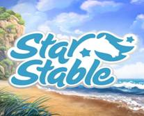
|

|
|
Главная
|
Мир игры
|
Лошади
|
Соревнования
|
Новости
|
|
|
|
Лузитано
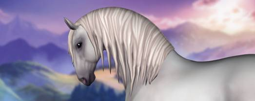
Лузитано — это португальская порода, знаменитая своими
красивыми движениями и сходством с андалузской лошадью. Наконец пришло время
этой великолепной лошади украсить поля Юрвика своим
присутствием и совершенно новыми движениями!
★ Где мне их получить?
Ты найдешь двух лошадей у Конного центра Серебряной Поляны
и одну в Форте Пинта!
★ Сколько они
стоят?
949 Star Coins.
★ Какой у меня
должен быть уровень?
Тебе нужно достичь уровня 7, но в течение следующих четырех
недель ты сможешь купить лузитано в Форте Пинта,
даже если у тебя пока еще нет этого уровня!
★ Мне нужно
набирать репутацию?
Нет!
★ Какие масти
я могу выбрать?
Сказочную белую, великолепную темно-гнедую и уникальную
жемчужную!
★ Есть ли еще
что-нибудь, что мне нужно о них знать?
Конечно, да! Лузитано — лошадь в
основном для выездки, поэтому ты можешь заметить, что она немного нервничает,
когда прыгает после короткого галопа. #GoofyJumpers
— мы их любим! С другой стороны, мы не просто так заговорили о выездке! Если
ты нажмешь пробел, пока твоя лузитанская лошадка
стоит на месте, то сможешь насладиться потрясающей укороченной рысью!
|
|
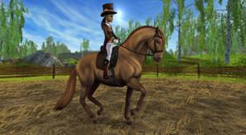
|
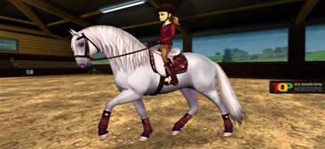
|
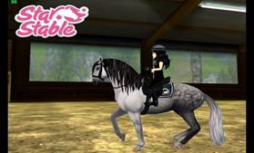
|
|
Валийский пони
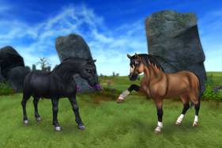
Сейчас, когда вы встретились с отшельником и заслужили
немного его доверия, вы можете поговорить с ним о том, чтобы взять одну из
трёх вликолепных Валлийских пони. Заплатите ему
одну встречу, обсудите этот вопрос и вы можете быть отправлены обратно в
домашнюю конюшню, чтобы встретить там вашего нового друга!
Вот новая функция для новостей в среду, которую мы называемФакты о новой породе,
где мы представим вам краткое описание того, что вы должны знать о новых
Валлийских пони!
★ А какая новая порода?
Милые Валлийские пони!
★ Где я смогу
найти её?
У отшельника на полуострове Южное Копыто.
★ Сколько она
будет стоить?
790 Star Coins.
★ На каком
уровне я должна быть, чтобы купить её?
Валлийскую пони могут купить все, с 1 уровня, но вам
нужно
быть на уровне 7, чтобы попасть на полуостров Южное Копыто.
★ Надо ли мне
повышать репутацию?
Вам надо иметь репутацию хотя бы 'дружелюбная' с
отшельником.
★ У Валлийской
пони такая же скорость, как и у других пони?
Да, эти маленькие друзья не так быстры, как другие породы.
★ Какие цвета
можно выбрать?
Первые три Валлийские пони имеют цвета чёрный, цвет паломино и коричневый.
Мы надеемся, что вы также, как и мы влюбитесь в этих милых
маленьких Валлийских пони!
|
|
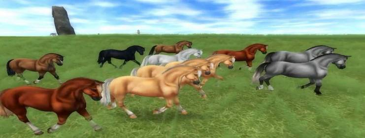
|
|
Юрвикский пони
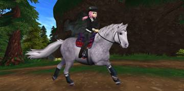
Юрвикский пони — это
собственный пони Юрвика, который, благодаря своему
легкому характеру, станет отличной лошадью для новичка. Это прелестный пони,
всегда готовый к работе, а также чемпион Юрвика по
стрижке газонов!
★ Что за новая порода?
Обновленный юрвикский пони!
★ Где мне их
получить?
На барже пони у Форта Пинта!
★ Сколько они
стоят?
Этот пони для новичка стоит 350 Star
Coins!
★ Какой у меня
должен быть уровень?
Никаких ограничений по уровню — как только попадешь на
баржу пони, сразу же сможешь заполучить пони!
★ Мне нужно
набирать репутацию?
Нет!
★ Есть ли еще
что-нибудь, что мне нужно о них знать?
У наших упитанных пони короткие ножки, поэтому раньше им
было тяжело угнаться за большими лошадьми. Но эти чудесные друзья быстрее,
чем кажутся, и вполне могут соперничать с крупными лошадками!
|
|
Пегая арабская
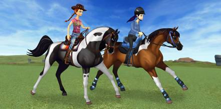
Пегая
арабская — это сравнительно новая порода, лошади которой выглядят как
арабская чистокровная, но у них великолепный пегий окрас. Ведь пегая масть —
это так красиво! Пегие арабские лошади Юрвика
бывают трех разных цветов.
★ Что за новая порода появилась на Юрвике?
Красивая пегая арабская!
★ Where Я могу купить этих лошадей?
Деревушка Полумесяца, Форт Пинта, Конный Центр
Серебряной Поляны.
★ How Сколько они стоят?
Каждая стоит 969 Star Coins.
★ Какой у меня
должен быть уровень?
Уровень 11!
★ Нужно ли мне
зарабатывать репутацию где-нибудь, чтобы купить такую лошадь?
Нет!
★ Какие окрасы
я могу выбрать?
Три разных окраса пегой масти!
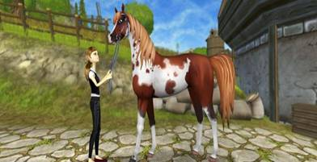
|
|
Фризкие спортивные
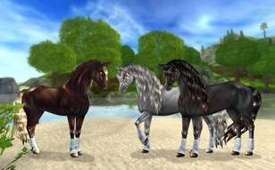
Три
совершенно новые Фризские спортивные лошади вы найдёте с этой недели в Нью Хиллкрест! Поезжайте и
проверьте этих шикарных красавиц!
★ Какая новая порода?
Великолепная обновленная Фризская спортивная Премиум!
★ Где их можно
приобрести?
Они на продаже в Нью Хиллкрест.
★ Сколько они
стоят?
890 Star Coins.
★ Какой
уровень в игре у меня должен быть, чтобы я смогла их купить?
Вы должны быть на 15 уровне, чтобы попасть в Нью Хиллкрест и купить их!
★ Нужно мне
иметь определённый уровень репутации?
Нет!
★ Какие есть
масти?
Вы можете увидеть варианты окраса, взглянув на картинку
выше!
|
|
Липицианские лошади
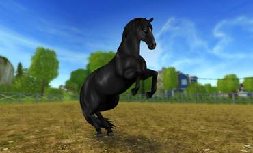
Они
уже здесь!! Ожидание было не таким долгим между нашей подглядкой
и днём, когда вы можете забрать к себе домой одну из безукоризненно
элегантных Липицианских лошадей! С сегодняшнего дня
вы можете найти этих великолепных лошадей на продаже в Юрвике.
★ Какая новая порода?
Роскошная и элегантная Липицианская лошадь!
★ Где их можно
купить?
Две из них находятся на продаже в Нью
Хиллкрест и ещё одна в Форту Пинта.
★ Сколько они
стоят?
949 Star Coins.
★ Какой
уровень у меня должен быть, чтобы я смогла их купить?
Ты сможешь купить этих красавцев с 9 уровня!
★ Нужно мне
иметь определённый уровень репутации?
Нет!
★ Какие будут
масти?
Серая, серая в яблоках и чёрная.
|
|
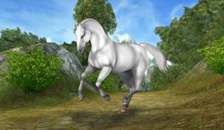
|
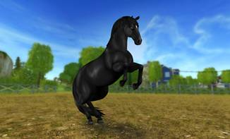
|
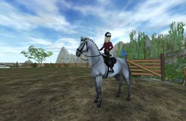
|
|
Английская чистокровная
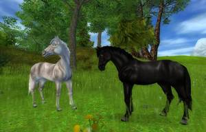
Как
одна из самых популярных пород Star Stable... мы решили выпустить удивительную премиум-версию Английской Чистокровной! Одну масть из
которых можно купить в Форту Пинта,а две другие - в
Деревушке Полумесяца. Эти красавцы были полностью обновлены новой графикой и анимациями! Так что быстрее все в конюшню! Эти прекрасные
Чистокровные очень ждут встречи с вами!
|
|
Северная шведская лошадь
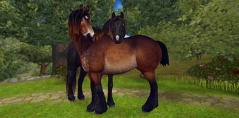
Эта
спокойная и дружелюбная лошадь — потрясающая лошадь для семьи! Когда-то
северная шведская была обычной тягловой лошадью, которые применялась для
работ в сельском и лесном хозяйстве в Швеции, но в наши дни она часто
используется для верховой езды. Благодаря своей густой шерсти это идеальная
лошадь для тех из вас, кто любит проводить время в Долине спрятанного
динозавра!
★ Итак, что это за порода?
Северная шведская!
★ Где я могу
купить этих лошадей?
Вы найдете одну из них в Форте Пинта, а двух других — в Вэлдейле.
★ Сколько они
стоят?
749 Star Coins.
★ Какой у меня
должен быть уровень, чтобы их купить?
Уровень 8, но лошадь в Форте Пинта можно купить, начиная с
1 уровня!
★ Нужно ли мне
зарабатывать репутацию, чтобы купить такую лошадь?
Нет!
★ Какие масти
можно выбрать?
Гнедую, вороную и паломино!
★ Что еще
нужно знать об этой новой лошади?
Есть три вещи, которые полезно знать о северной шведской
лошади!
- Лошади этой породы обладают густой шерстью и устойчивы к
холоду, поэтому они с удовольствием будут проводить столько времени в Долине
спрятанного динозавра, сколько вам угодно.
- Из-за густых щеток (длинной шерсти на нижней части ног и
над копытами) на северных шведских лошадей нельзя надеть ногавки.
- Тягловым лошадям, которые проводят много времени
запряженными в повозки или плуг, часто коротко обрезают хвосты, чтобы их не
защемило. Чтобы отдать должное тягловому наследию северной шведской лошади,
вы можете выбрать для нее вариант очень короткого хвоста!
|
|
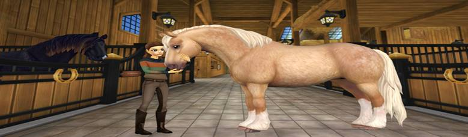
|
|
Спирит
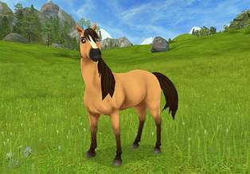
Мы
безмерно рады представить мультсериал компании Dreamworks «Спирит: Душа
прерий» в Star Stable! Ты найдешь его в игре, начинающейся сегодня!
Войдя в игру, ты сможешь заметить Спирита где-то на острове
каждый час. Где именно он появится, определить никак нельзя, поэтому собери
всех своих друзей и смотрите в оба!
Спирит – это дикий свободолюбивый мустанг. Его нельзя
приручить. НО если найти к нему правильный подход и помогать ему, можно
завоевать его доверие и стать его настоящим другом! Каждый раз, когда Спирит
появляется на острове Юрвик, у него с собой есть
для тебя задания. Каждый раз, когда ты будешь помогать Спириту, выполняя одно
из его заданий, ты будешь зарабатывать все больше очков репутации, а чем выше
твой уровень репутации, тем больше предметов ты сможешь купить в новейшем
магазине «Спирит» в Форте Пинта, владелицами которого являются поклонницы
Спирита Тори и Салли! Здесь ты найдешь особенные
яблоки из Мирадеро. Легенды гласят, что эти яблоки
растут только там, откуда родом Спирит. Ты сможешь купить яблоко, только если
Спирит действительно тебе доверяет.
Как знать... Когда ты накормишь Спирита яблоком, он может
решить пойти жить в твою конюшню…
★ Что нужно сделать, чтобы Спирит пошел в мою
конюшню?
Когда ты выполнишь достаточно заданий Спирита, чтобы
достичь уровня репутации «Восхищение», ты сможешь купить особенное яблоко из Мирадеро в новом магазине «Спирит» в Форте Пинта. Когда
ты покормишь яблоком Спирита, он пойдет в твою конюшню.
★ Чем Спирит
отличается от других лошадей в Юрвике?
Поскольку Спирит вольный конь, он ни за что не согласится
носить снаряжение. Когда он перейдет в твою конюшню, его уровень будет уже 15!
ВНИМАНИЕ! Ты не можешь изменить имя
Спирита, гриву и хвост.
|
|
Тинкер
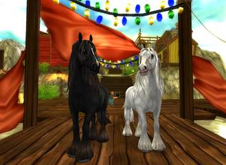
- Две
величественные лошади Тинкер прибыли на лошадиный
рынок Эдди и Фердинанда. Какая из них является твоим фаворитом? Та, что
черная как ночь или сказочно белоснежная?
-
Лошадиный рынок вновь открывает свои двери! На этот раз в рыбацкой деревушке
Западного Островка и будет открыт там в течение двух недель. Они будут
продавать там никогда невиданные в этом районе две новые лошади Тинкер: черную и белую.
|
|

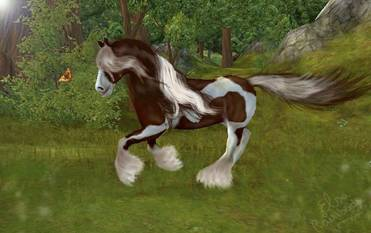
|
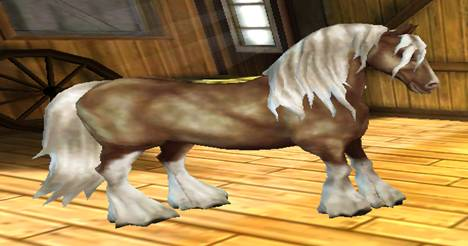
|
|
Хафлингер
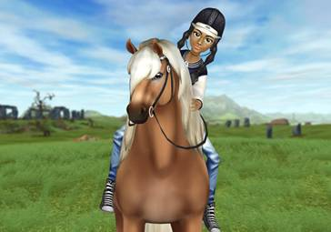
Хафлингеры –
некрупная, выносливая и очень добрая порода, и юрвикцы
уже влюбились в них до умопомрачения. Особая примета хафлингеров
– характерный золотисто-бурый окрас и пышная светлая грива. В конюшнях Вэйлдейла нашлось место для трех лошадей этой
замечательной породы, так что отправляйся туда поскорее, чтобы на них
посмотреть!
★ Что это за новая порода?
Дружелюбные хафлингеры!
★ Где их можно
получить?
Всех трех лошадей можно получить в Вэйлдейле.
★ Сколько они
стоят?
Каждая из этих прекрасных лошадей стоит 810 Star Coins.
★ Какого
уровня мне нужно достигнуть, чтобы их купить?
Нужен уровень не ниже 5.
★ Нужна ли для
них репутация?
Нет, никаких требований к репутации!
★ Какие у них
окрасы?
У всех хафлингеров льняно-каштановая окраска, а это значит, что окрас от
золотистого до бурого со светлой гривой!
★ Есть еще
что-нибудь интересное про хафлингеров?
Конечно! Породу хафлингеров
вывели в заснеженных Альпах, поэтому эти лошади легко переносят холод в
Долине динозавров, точно так же, как исландские, фьордовые
и северные шведские лошади!
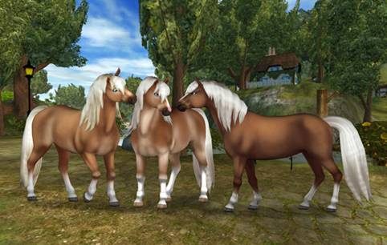
|
|
Ганновер
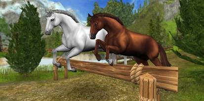
Ганноверская
лошадь — это популярная во всем мире спортивная лошадь, и наконец она
появится на Юрвике! Нам не терпится увидеть, как вы
будете ездить верхом на этой прекрасной лошади.
★ Что за новая порода?
Клевая ганноверская лошадь!
★ Где мне их
получить?
Одну — в Форте Пинта, вторую — у Виноградников, а третью —
в конюшне Золотого листа!
★ Сколько они
стоят?
Вы сможете приобрести нового друга за 890 Star Coins!
★ Какой у меня
должен быть уровень?
14 уровень — самое то! Хотя у нас есть особое исключение...
Читайте дальше, и все узнаете!
★ Мне нужно
набирать репутацию?
Вовсе нет!
★ Какие масти
я могу выбрать?
Клевую рыжую, прекрасную белую и великолепную вороную!
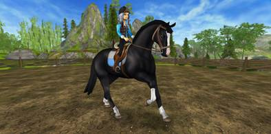
|
|
Исландская лошадь
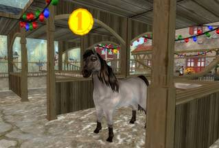
С
гордостью и радостью команда Star Stable хотела бы представить вам новую породу в Юрвике - Исландских лошадей. Наша замечательная команда
аниматоров, дизайнеров и программистов работали день и ночь, чтобы появилась
эта новая очаровательная порода лошадей с милым характером и необычайным
шагом. И вот, настал тот день, когда мы можем с гордостью представить вам
этих красавцев!
Исландские
лошади трёх мастей теперь доступны в Нью Хиллкрест в Эпоне. Много нового
можно узнать о новой очаровательной Исладнской
породе, но давайте начнем с их уникального аллюра.\
|
|
Юрвийская Чистокровная
Это начальная порода лошади которая
есть у каждого начального игрока. Он может сам выбрать
Своей
лошади её окраску, окраску её гривы и сам сможет выбрать ей имя. Потом зайдя
в игру он сможет прокачивать её и копить Star Coins на других лошадей, но всегда сможет вернуться к
своей начальной лошади и продолжать играть с ней и ездить на ней.
|
|
Шайр
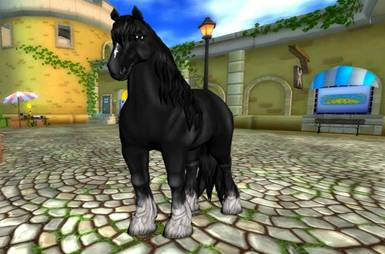
Давайте, все душевно поприветствуем новую породу Шайров у нас в Юрвике! Эти
очаровательные гиганты просто потрясающие, и мы очень надеемся, что вы
полюбите их так же как полюбили их мы!
|
|
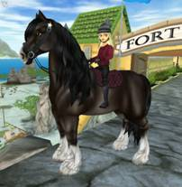
|
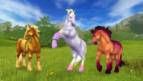
|
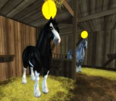
|
|
Араб
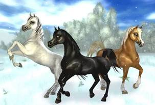
На этой неделе
на остров Юрвик прибыли три великолепных новых
арабских лошади, и им не терпится вас повстречать! Двух из них вы сможете
найти на ферме Голдспур в Урожайных областях, а
третью – в форте Пинта.
Чтобы заполучить любую из этих трех красавиц, вам нужно
быть не ниже 10 уровня и выложить 969 Star Coins. Не забудьте рассказать нам, какая из них
понравилась вам больше всего и какие масти вы хотели бы увидеть в будущем!
|
|
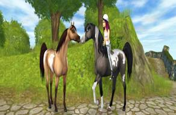
|
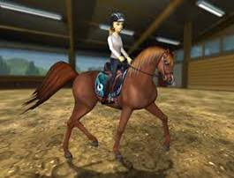
|

|
|
Зони
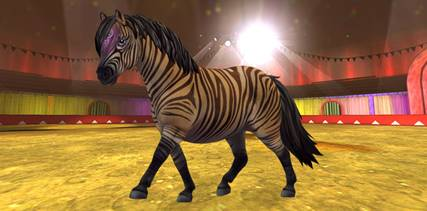
Идрис всегда был
любителем чего-нибудь новенького, а его новое задание, кажется, связано с
пони. Мы не совсем уверены, что магия Идриса хорошо
подействует на пони, так что советуем тебе навестить его и посмотреть, что он
приготовил на этот раз для пони, у которого вдруг... ПОЯВИЛИСЬ ПОЛОСКИ?
★ Что за новая порода?
Особый юрвикский пони, превращенный в Зони!
★ Где мне его получить?
Этого пушистого красавчика можно купить у цирка на Высокогорье Нильмер.
★ Сколько он стоит?
550 Star Coins.
★ Какой у меня должен быть уровень?
Как только ты поможешь Идрису построить цирк, то
можешь поговорить с ним, чтобы разблокировать Зони!
★ Какие масти я могу выбрать?
Пока что Идрис применил свою магию только к одному
пони, и он полосатый, как зебра! Но если ты получше приглядишься к голове
пони, то сможешь увидеть кое-где следы пандорианской
магии...
★ Есть ли еще что-нибудь, что мне нужно знать?
Хоть Идрис и превзошел сам себя с этим пони, он все
равно остается пони. Это значит, что ты сможешь участвовать в гонках пони и
чемпионате пони верхом на этом очаровашке!
Да, и еще кое-что! После того как к нему применили магию, у малютки Зони появились трудности с лошадиным ржанием. Вместо
этого он... хотя, пожалуй, не будем портить веселье. Пусть он встанет на
дыбы, и тогда ты сможешь это лично услышать!
|
|
Дикая Лошадь Юрвика
Привет,
StarFam! Кажется, в Зимней деревне на этой неделе холоднее,
чем обычно. Возможно, это из-за новой лошади, которая там только что
появилась?..
Зимняя деревня доступна до 2 января
2019 года! Если хочешь вспомнить, сколько там разных веселых занятий, загляни
в выпуск новостей прошлой недели.
Кажется,
Гари Голдтанд рано прибыл в Зимнюю деревню...
Подожди-ка, что? Что ж, кто-то, кажется, оставил эту совершенно новую дикую
лошадь Юрвика за домом Санты!
Эта особая лошадь доступна в Star Stable, только пока
открыта Зимняя деревня. Так что если захочешь, чтобы этот милашка пополнил
твое семейство лошадей в Star Stable,
найди его до 2 января!
Есть ли на свете лошадь, более подходящая для верховых
прогулок в холодную погоду?
★ Что за новая
порода?
Новая разновидность дикой лошади Юрвика!
★ Где мне ее
получить?
За домом Санты в Зимней деревне.
★ Сколько она
стоит?
599 Star Coins.
★ Какой у меня
должен быть уровень?
Для этой лошади нет ограничения по уровню!
★ Какие масти
я могу выбрать?
Сейчас доступна только одна лошадь — волшебная морозная,
которая превращается в вороно-чалую, когда приближается к конюшням и
деревням! Это как будто две лошади в одной!
★ Есть ли еще
что-нибудь, что мне нужно о ней знать?
Да, конечно! Эта лошадь пока единственная из всех диких
лошадей Юрвика, которая устойчива к ужасно холодному
климату Долины Спрятанного Динозавра. Еще одна важная вещь, о которой следует
помнить, — это то, что дикие лошади Юрвика немного
медленнее, чем все остальные лошади на Юрвике.
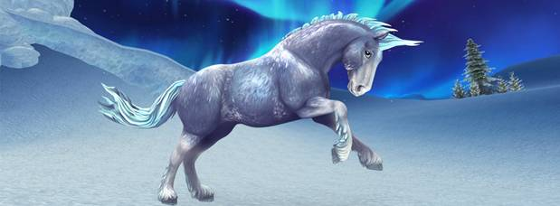
|
|
Клейдесдали
Клейдесдали — одна из самых высоких пород в мире, и она
часто используется в качестве тягловой лошади. На Юрвике
клейдесдали — популярная порода для верховой езды, а еще их очень любят лошадиные
парикмахеры, которые с удовольствием делают им разные прически! У юрвикских клейдесдали очень пушистая шерсть, поэтому они
крайне устойчивы к холодному климату!
★ Что за новая порода?
Могучий клейдесдали!
★ Где мне их получить?
Ты найдешь одну лошадь в Форте Пинта, а двух
других — в конюшне Дундула в Мистфоле.
★ Сколько они стоят?
750 Star Coins.
★ Какой у меня должен быть уровень?
Ты можешь купить лошадь в Форте Пинта сразу
же, а чтобы разблокировать Мистфол и двух других
лошадей, тебе нужно достичь минимум 12-го уровня.
★ Какие масти я могу выбрать?
Светло-гнедую сабино,
вороно-чалую и прекрасную черную!
★ Есть ли еще что-нибудь, что мне нужно о них знать?
По традиции на выступлениях в гриву и хвост клейдесдали вплетают ленты.
Конечно, ими щеголяет и юрвикский клейдесдали! У
этой лошади ВОСЕМЬ разных вариантов гривы и хвоста, при этом четыре из них
уникальны и есть только у клейдесдали. Это означает, что ты можешь выбрать
ленточки в гриве, хвосте, в обоих местах или вообще от них отказаться. Также
гриву клейдесдали можно заплести в такие же косички, как у юрвикской чистокровной! Но они не могут носить ногавки из-за густых щеток над копытами.
И еще кое-что — юрвикские клейдесдали также
известны своей чудесной пушистой шерстью, поэтому они устойчивы к
невероятному холоду Долины Спрятанного Динозавра!
Чудесный друг, который отправится с тобой куда
угодно!
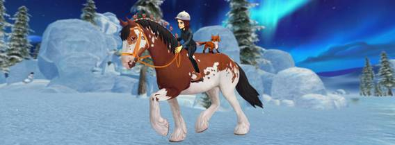
|
|
Разработала Мария Барыкина
2018 г.
|
|
|
|
|
|
|
|
|
|
|
|